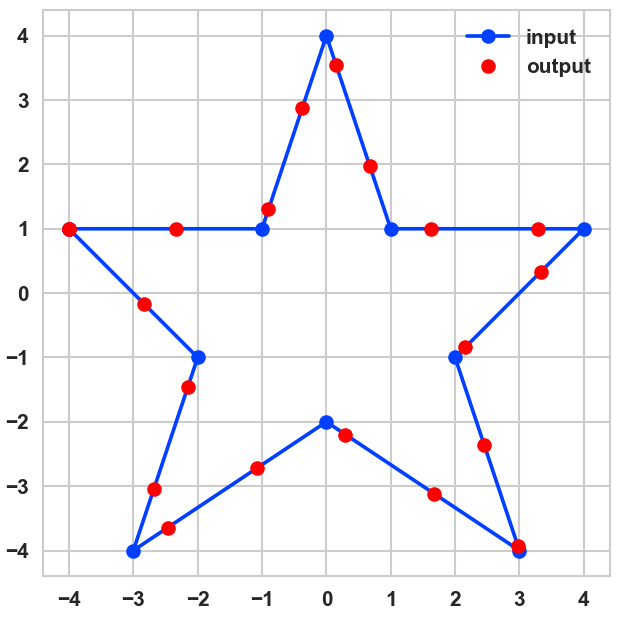

Equidistant Points on a Line
by Chris Luedtke in AlgoSIG 5Challenge
Given a polyline defined by an ordered list of 2D coordinates, return a list of n equidistant coordinates on that polyline.
Sample input:
coords = [ (-4, 1), (-1, 1), ( 0, 4), ( 1, 1), ( 4, 1), ( 2, -1), ( 3, -4), ( 0, -2), (-3, -4), (-2, -1), (-4, 1) ]

Solution
import math def point_dist(p1, p2): """Distance between two points""" return math.sqrt((p2[0] - p1[0]) ** 2 + (p2[1] - p1[1]) ** 2) def p3_along_p1_p2(p1, p2, dist): """Returns (x, y) point at a given distance from p1 and along the line created by p1 and p2 """ dist_btw = point_dist(p1, p2) dist_ratio = dist / dist_btw x = (1 - dist_ratio) * p1[0] + dist_ratio * p2[0] y = (1 - dist_ratio) * p1[1] + dist_ratio * p2[1] return x, y def point_seq_length(coords): """Compute distance of sequential (x, y) list along a route""" return sum([point_dist(p1, p2) for p1, p2 in zip(coords, coords[1:])]) def equidist_pts_on_line(coords, n_pts): """Equidistant points along route coords: sequential (x, y) list along a route returns: (eq_coords, segment_len) """ route_len = point_seq_length(coords) segment_len = route_len / (n_pts - 1) segment_len_remain = segment_len curr_p = coords[0] eq_coords = [coords[0], ] # add the same first coordinate next_coord_idx = 1 while True: next_p = coords[next_coord_idx] dist_to_next = point_dist(curr_p, next_p) if segment_len_remain > dist_to_next: segment_len_remain -= dist_to_next curr_p = next_p next_coord_idx += 1 else: # segment_len_remain <= dist_to_next # place an eq_coord segment_len_remain distance from curr_p # on the line created by curr_p and next_p eq_coord = p3_along_p1_p2(curr_p, next_p, segment_len_remain) eq_coords.append(eq_coord) curr_p = eq_coord # update curr_p to our new point if len(eq_coords) == n_pts: # solve condition break # do not update next_coord_idx # recompute these to reduce accumulated error route_len = point_seq_length([curr_p] + coords[next_coord_idx:]) segment_len = route_len / (n_pts - len(eq_coords)) segment_len_remain = segment_len return eq_coords
Plot our solution with:
import matplotlib.pyplot as plt plt.style.use('seaborn-whitegrid') coords = [ (-4, 1), (-1, 1), ( 0, 4), ( 1, 1), ( 4, 1), ( 2, -1), ( 3, -4), ( 0, -2), (-3, -4), (-2, -1), (-4, 1) ] eq_coords = equidist_pts_on_line(coords, 20) fig, ax = plt.subplots(figsize=(5, 5)) ax.plot([p[0] for p in coords], [p[1] for p in coords], 'o-', label='input') ax.plot([p[0] for p in eq_coords], [p[1] for p in eq_coords], 'o', color='red', label='output') ax.legend() ax.set_aspect('equal') fig.savefig('Basic.png', dpi=150, facecolor='white');
Comments
Comments powered by Disqus